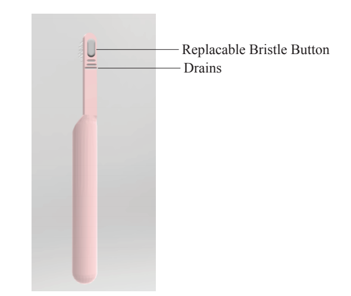
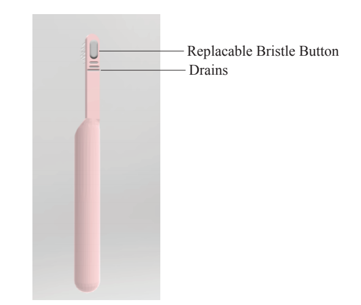

Applying human factors and ergonomics - Project in collaboration with Kelly Glennon and Alex Shukhman
Project Definition
Design a cabin of dimensions, Length: 2100m Width: 1225m Height: 1150mm, that is capable of sitting a driver and 3 passengers and incorporate all controls and indicators necessary for operating the vehicle.

Accounting For:
Ergonomics, Anthropometric Accessibility, and Ease of Operation for a 95th percentile Man and a 5th Percentile Woman
Front Seat
The seats were designed to have an adjustable backrest so that the occupant may manipulate the angle according to the degree which they would like to be reclined. The seat was designed to support the natural curvature of the spine resulting in a thicker base and a thinner top to accommodate for the curvature of the small of the back (Appendix 4.3, Figure 30). The ideal angle for the backrest, though it is adjustable, is 21 degrees because it is the ideal seated angle to limit the pressure of the trunk on the occupant's pelvis. Therefore the angle of the headrest was angled in 21 degrees from the vertical of the backrest. Ideally the angle of this will result in the passenger having their heads facing forwards while still supporting the base of the neck. The length of the seat is designed to go to the knees of the 5th percentile woman. This allows the thigh of the occupant to be supported. The width of the 95th percentile man’s hips were used to determine the width of the seat making it slightly larger than his hip span to make seating comfortable for all occupants. The base of the seat is angled slightly upwards at 10 degrees to position the leg for comfortable extension so that the pedals of the car may be utilized.
Center Console Display
It was decided that the center console display should combine the use of an LCD display as well as buttons underneath it to control the radio, AC, and hazard lights. This was done so that there was a clean display to view information such as the time, the present radio station, and the settings of the AC controls. Rather than opting for a fully functional touch screen, the buttons underneath were designed so that the driver still had tactile feedback when adjusting the settings of the radio or the AC without the necessity of looking at the screen to gain a spatial awareness of the controls. This provides a safer situation for the driver and the passengers. The center console's screen is located 35 degrees below the operator's direct line of sight making it within the viewing range of the operator. Furthermore, the screen has the dimensions 896.1mm x 515.4 mm and can be powered off by the button labeled “Screen” with the power symbol on it. It was created this large so the driver could easily see the time, radio station playing, GPS map, and backup camera view.
Speedometer
This car utilizes a digital speedometer as well as a traditional analog speedometer. The digital speedometer was designed for the convenience and safety of the driver. It is located in the middle circular display and displays the exact speed of the car in mph (Appendix 4.3, Figure 6). As this is the most viewed gauge, it is the largest with a text size of 90mm.This will save the driver time when checking the speed, thus optimizing safety. There is also a traditional, analog, speedometer to the left of the digital speedometer in the left circular display also measuring the speed of the car in mph. This is provided in case the digital fails as well as for drivers who are conditioned to using this type of speedometer and prefer it.
 

CAD
A distinct feature that helps to lower the environmental footprint of this toothbrush is the replaceable bristles. The bristles sit on a plastic pad at the head of the brush and when it is time to replace them, the consumer simply presses a button on the back of the head of the brush to release the bristle pad and apply a new one. The mechanism inside uses circular motion to produce frequent brush movements. Specifically, the motor spins causing a shaft to spin and the shaft moves in a circular pattern causing in and out bristle motion at the head. Smaller size brush handle outweighed battery life and one battery was used instead of two. A smaller brush handle also helped to lower the overall cost of the toothbrush and use less plastic in production. There is a also LED at the base of the neck that turns on with the brush. The light is green for high battery, red for low battery, and orange signaling for bristle replacements. It reduces waste from bristles that are replaced too quickly and increases dental hygiene for those who do not replace their heads enough.
Phone
(808) 494-4929Address
332131 Georgia Tech StationAtlanta, Ga 30332
United States of America